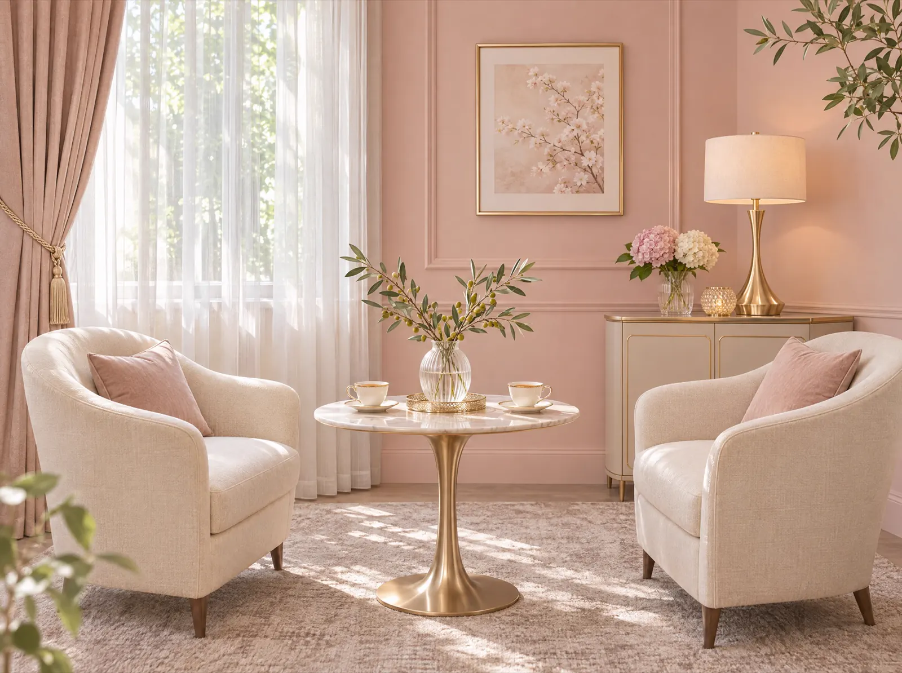

Flow
成婚までのながれ
無料カウンセリングから、ご成婚まで。ひとつずつ、カウンセラーと一緒に進みます。
5 steps
ご成婚までの5つのステップ
- STEP 1
無料カウンセリング目安 60分
お話を伺い、サービスと料金を説明します。その場で入会を決める必要はありません。
ご希望・ご不安を伺います。対面でもオンラインでも受けられます。
- STEP 2
ご入会・プロフィール作成目安 1〜2週間
プロフィールの文章と写真を、カウンセラーと一緒に整えます。
写真スタジオのご紹介や、服装のご相談もできます。
- STEP 3
お見合い目安 1〜3か月
ホテルのラウンジなどで、1時間ほどお茶をしながらお話しします。
日程の調整はカウンセラーが行います。終わったら、感想をお聞かせください。
- STEP 4
交際目安 3〜6か月
デートの相談や、気持ちの整理も。困ったときはいつでも連絡してください。
仮交際から真剣交際へ。おふたりのペースを大切にします。
- STEP 5
ご成婚
おふたりで結婚の意思を決めたら、ご成婚です。心からお祝いします。
ご成婚後も、ご両家へのご挨拶などのご相談をお受けします。
※期間の目安はサンプルです。人によって大きく変わります。
